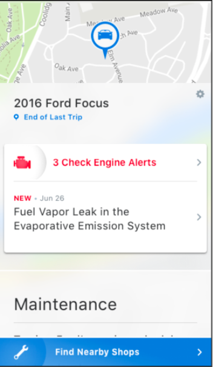
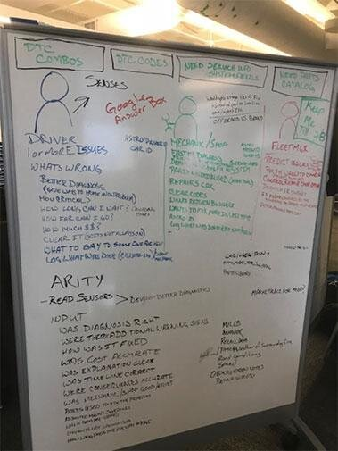
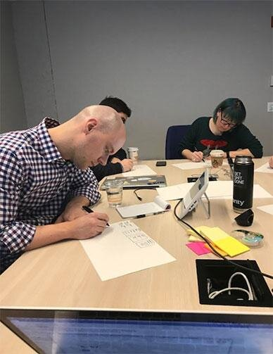
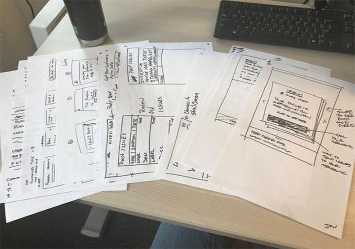
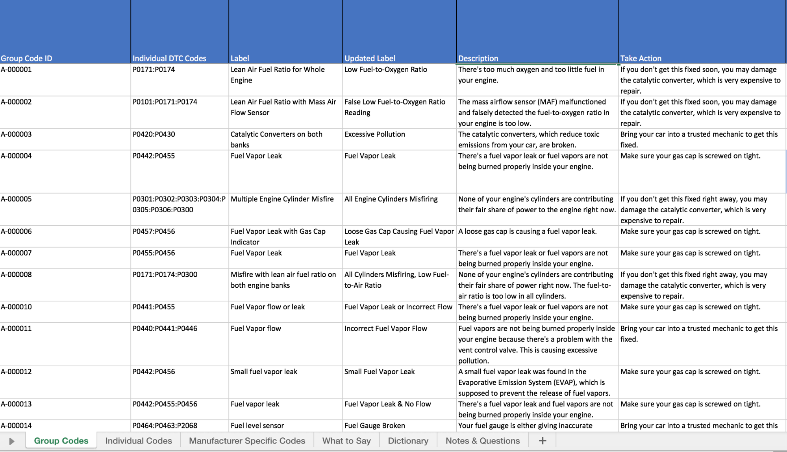
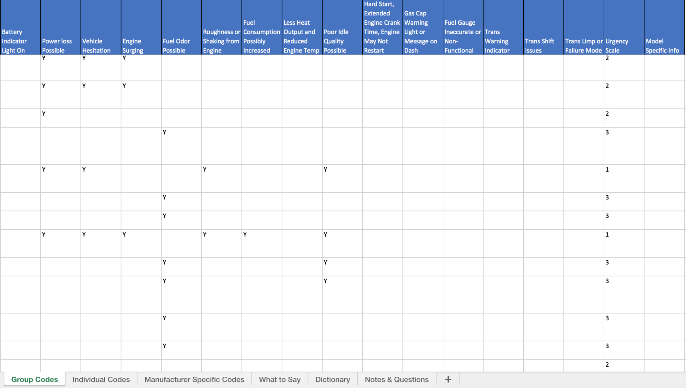

Challenge
Arity wanted to make car maintenance easier for drivers. When a check engine light comes on, a car's onboard computer logs a DTC (diagnostic trouble code) — but that code, and the language typically used to describe it, is written for mechanics, not drivers. The goal was to make DTCs accessible, actionable, and easy to understand for the average consumer, instead of leaving someone to Google a code number and guess how serious it is.
Team & My Contributions
A small, cross-functional team:
- SME: Car Mechanic
- Engineering Director
- Content Design Manager (me)
My contributions:
- LUMA workshop facilitation — running a design-thinking session to get the team from raw diagnostic data to a shared plain-language framework.
- Copy database — building the content system that mapped every DTC code to a driver-facing label, description, and recommended action.
Before: Screen Example
This is what a driver would see today: a check engine alert labeled "Fuel Vapor Leak in the Evaporative Emission System." It's technically accurate, but it's mechanic language — it doesn't tell a driver how urgent the problem is or what to actually do about it.

Process
I facilitated a LUMA-method design thinking workshop with our SME mechanic and engineering director to work through this together. We mapped codes by audience — driver, mechanic/shop, fleet manager — and pressure-tested questions like: How much does this cost to fix? How urgent is it? What's the plain-language version a driver would actually understand?


From there, the team sketched early screen concepts for how a code, its plain-language explanation, and its recommended action might come together on screen.

Outcome: Content Library
The workshop's output became a structured copy database — a multi-tab reference spanning Group Codes, Individual Codes, Manufacturer-Specific Codes, a "What to Say" style guide, a dictionary of terms, and open questions. Each code got a plain-language label, a driver-facing description, a recommended action, and an urgency rating.

Additional columns flagged related symptoms — battery indicator light, fuel odor, engine surging, vehicle hesitation, and more — alongside an urgency scale, so the same code could be triaged consistently no matter where it surfaced in the product.

Results
This project was shelved before it could launch, due to funding and product suite re-prioritization — a reminder that not every project a content designer works on makes it to production. The workshop process and the copy database itself became a reusable model, though: a repeatable way to turn raw technical data into a driver-facing content system, ready to pick back up if the priority returns.